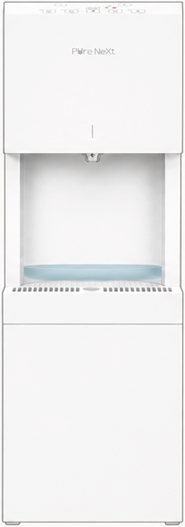
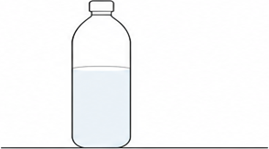
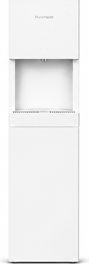
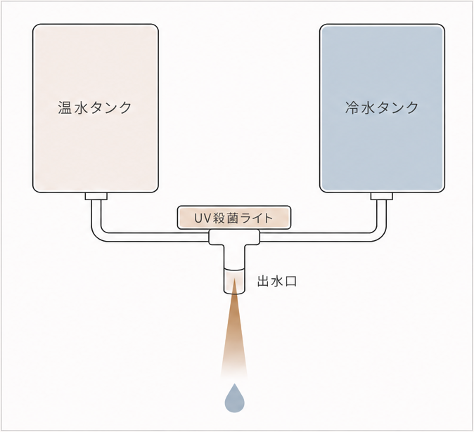
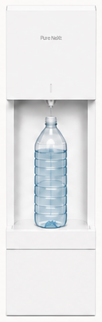
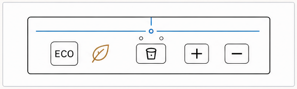
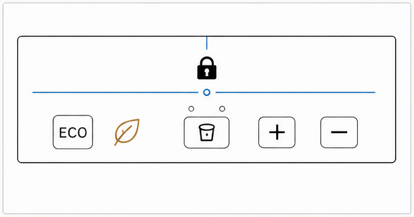
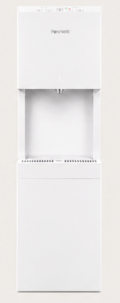
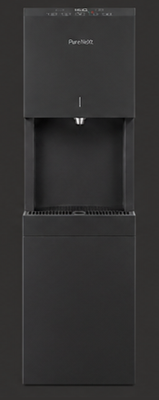
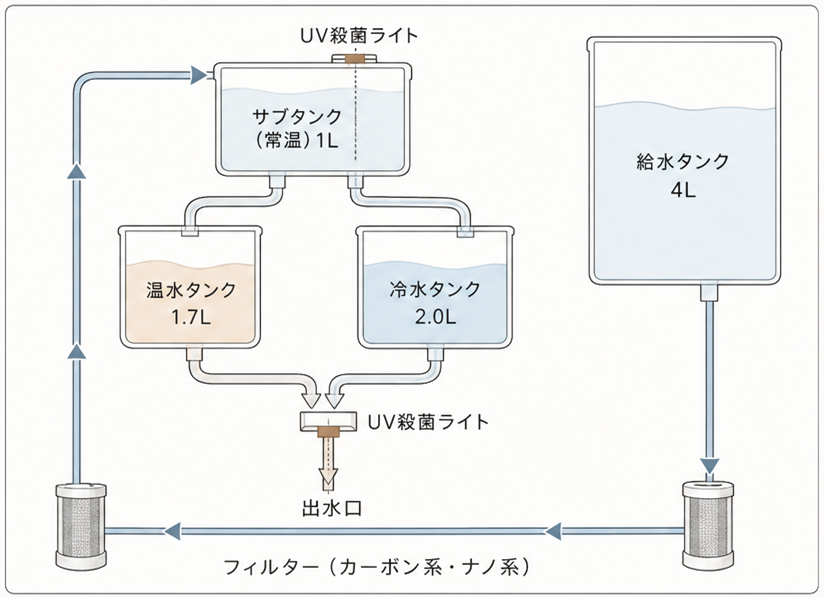

浄水型ウォーターサーバー
PureNext 製品ガイド
販売パートナー向け
製品仕様と機能を、販売にたずさわる皆さまにご確認いただくための資料です。
浄水型ウォーターサーバー PureNext ／ 型番 PNX-01-ST
ウォーターサーバー市場について
台数と前年比で見る、いまの選ばれ方です。
1/4

宅配水型
468万台
前年比 99.7%
統計が公表されて以来はじめての純減

浄水型
126万台
前年比 +23.4%
ウォーターサーバー市場について
普及率は、まだ12.3%です。
2/4

12.3%
約600万台
万台
宅配水型
452
469
468
0
2023年度
2024年度
2025年度
万台
浄水型
72
102
126
0
2023年度
2024年度
2025年度
ウォーターサーバー市場について
宅配水型をお使いのお客様には、乗り換えたくなる理由がそろっています。
3/4
宅配水型の、日々の負担

01
重いボトルの交換
12Lのボトルは約12kg。
胸の高さまで持ち上げて交換します。

02
保管と管理の手間
毎月届くボトルの置き場所と、
空ボトルの回収待ちが必要です。

03
飲む量の調整
飲む量が多いと足りなくなり、
少ないと余ってしまいます。
料理に使うといった気軽な使い方が
できません。
ウォーターサーバー市場について
浄水型に変えると、こう良くなります。
4/4
宅配水型の月額（24Lあたり・税抜）
どこも税抜で3,000円台後半です
| プレミアムウォーター | 3,809円〜 |
| コスモウォーター | 3,800円 |
| アクアクララ | 3,946円〜 |
各社公式サイト 2026年9月時点・代表プラン・税込表示は1.1で割った
税抜換算の目安・サーバー代を除く
PureNext なら
3,300
円
税抜
税込3,630円
月額定額で
飲み放題
01
安くなる
3,000円台後半の宅配水型より、月額が下がります。
02
飲み放題になる
量を気にせず、無制限に飲めます。
03
使える用途が増える
料理に、スープやコーヒーのお湯に。水を"使う"場面が広がります。

新規のお客様に選ばれるきっかけ
はじめてウォーターサーバーを持つお客様の、ご契約のきっかけです。

01
赤ちゃんのお誕生
必要なときに、すぐ熱湯をお使いいただけます。

02
お子さまのご入園・ご入学
水筒に入れる冷水を、量を決めてご用意いただけます。

03
ご家族に安心して飲んでいただける水を
衛生的で安全な水が飲めるようになります。
他にも
- 水を買わなくていい
- すぐに熱水が使えるようになる
- いつでも好きなだけお水が飲める
- 料理にも綺麗な水が使える
など、様々な魅力があります。
PureNextの3つの強み
他の浄水型と比べたときの特徴は、次の3点です。

5
つの温度
豊富な出水モードと細かな温度選択
冷水・温水・常温水・白湯・40℃をボタン1つで。
10ml
単位で指定
10ml単位での出水設定
100ml〜1,000mlを、5つのモードすべてで。
99.9%
殺菌効果
出水口まで徹底したUV殺菌
出てくる直前の水までしっかり清潔に。徹底した衛生管理。
10ml単位の指定量取水
1/3
水量の指定が、
10ml単位でできます。
他社の浄水型は、120ml・200mlなど
決められた量だけ。
10ml刻みで出せることで、
毎日の給水が圧倒的に便利になります。
液晶パネルで指定します
250ml
100ml
1,000ml
100ml〜1,000mlの範囲を、10ml単位で指定。
この後ご紹介するすべてのモードで使えます。
10ml単位の指定量取水
毎日の場面で、こう効きます。
2/3

01
毎朝の給水が手軽に
決めた量をセットしてワンプッシュ。
手放しで自動取水。

02
いつも同じ濃さで
スープもコーヒーも、
計量の手間なく同じ味に。

03
ボタンを押し続けなくていい
水筒への給水も、500mlと設定するだけ。

04
粉ミルク作りが楽
目盛りを合わせてお湯を入れる手間から解放されます。
冷水で調乳する方は、その後の冷水も
指定量で出せて楽です。
10ml単位の指定量取水
3/3
測る、押し続ける、待つ。ぜんぶ、いらなくなります。
量を決めてボタンを押すだけ。あとはサーバーにおまかせです。


取水量の誤差について
取水量には±数％の誤差があります。
500mlのペットボトルに500mlを注ぐとあふれることがあるため、
容器には少し少なめの設定が安全です。
粉ミルクの正しい作り方
厚生労働省が推奨する調乳の手順は、こちらをご参照ください。
厚生労働省ホームページ（乳児用調製粉乳の安全な調乳） www.mhlw.go.jp
豊富な取水のモード
1/4

温水
出水温度は85℃前後です。
安全のため出水ロックつき。『温水ロック解除』を
2秒長押しで解除できます。
解除後は、長押しの自由量と、指定量の両方で出せます。

冷水・常温水
冷水（約6℃）と常温水は、ロック解除なしで
そのまま出せます。
夜寝る前の水分補給や、体を冷やしたくない
健康志向で、常温水の需要が急速に高まっています。
低価格帯の機種には、常温水が付いていないものが多くあります。
乗り換えのきっかけにもなる機能です。
豊富な取水のモード
いま市場でニーズが伸びている白湯が、ワンタッチで出ます。
2/4
白湯（さゆ）― 55〜60℃
コンビニや自動販売機で白湯の販売が増え、『サユナー』という
言葉も生まれるほど、白湯の需要が高まっています。
その白湯が、PureNextならボタン1つ。温度は55〜60℃で出ます。
浄水型で白湯が出る機種は、ごくわずかです。
定量取水との掛け合わせで、習慣に
白湯を飲む方は、毎朝同じ量を飲まれる方が多いです。量を指定して
ワンタッチすれば、あとは手放しで取水できます。
楽だから、続く。白湯の習慣をつけやすいウォーターサーバーです。

150ml
豊富な取水のモード
3/4
40℃モード
温水と冷水を一度ずつ取水して、指定した量の40℃を作るモードです。
粉末を溶かしたあと、40℃にぬるくすることを目的としたモードです。
150ml
1
量を指定する

2
温水が出る

3
粉末を溶かす

4
冷水が出る

40℃
5
指定量の40℃が出来上がる
豊富な取水のモード
4/4
40℃モード
こんなときに

猫舌のお子さまに、
スープをぬるめに作るとき

リラックスしたいときの、
ぬるめのハーブティー

粉末のスープや緑茶を、
すぐ飲める温度で
出来上がりの量
粉が液体になる量まで計算して、出来上がり量はその量になります。
例えば、20gの粉を入れて150mlを作る場合、粉は溶けて16ml前後の
液体となるので、残りの134mlをお湯と水で作る仕組みです。
粉が溶けた分
16ml前後
お湯と水 134ml
出来上がり
150ml
温度の誤差について
温度は±数％のブレが発生します。
メモリ機能
すべてのボタンが、前回の量を覚えています。
各モードのすべてのボタンにメモリ機能があり、
そのモードで前回何ml出したかが記録されています。
たとえば前回、白湯を150mlで出したなら、
次に白湯モードでロックを解除してプラスボタンを
1回押すと、表示は150mlから始まります。
毎日決まった量を習慣にしている方ほど、
同じ数字がすぐ立ち上がるので便利です。
冷水と常温水は共通のメモリです。
温水・白湯・40℃モードは、それぞれ個別のメモリです。
0ml
メモリなし ― 毎回ゼロから合わせる
150ml
PureNext ― 前回の150mlから始まる
出水口のUV殺菌
出水口の直前で、UVライトが殺菌します。
1/4
タンクには、
除菌された水が入ります
そもそも温水タンクと冷水タンクには、
除菌された水が入ってきます。
どちらも、
菌が繁殖しにくい環境です
温水タンクは90℃、冷水タンクは約6℃。
どちらも菌が繁殖しにくい環境です。
気をつけたいのは、
出水口の付近です
空気中の菌・手指・水はねで菌が入りやすく、
残る水は常温のため、繁殖しやすい場所です。
本当にきれいな水を出すために、
いちばん殺菌が必要なのがこの出水口です。

出水口のUV殺菌
2/4
特に気をつけたいのが、緑膿菌が形成する
バイオフィルムです
バイオフィルムとは
浴室の床や三角コーナーのぬめりと同じもの。菌が自分を守るために作る、ネバネバの膜です。
浮遊
付着
膜を作る
水の中にバラバラに浮いている
壁にくっつき、仲間を増やす
ネバネバの膜で身を守る
この3ステップで、バイオフィルムを形成します。
1,000倍
膜になると、浮遊状態に比べて1,000倍死ににくくなるといわれ、厄介です。
出水口のUV殺菌
膜になってからでは遅い。その前に殺菌します。
3/4
浮遊
付着
膜を作る
水の中にバラバラに浮いている
壁にくっつき、仲間を増やす
ネバネバの膜で身を守る
膜が作られると、水を出すたびに膜が剥がれ落ちて水に混ざり、
衛生面や味・品質の劣化の懸念を生みます。
出水口のUV殺菌
壁に付着してバイオフィルムを形成する前に殺菌します。
4/4
PureNextは出水口部分に強力なUV殺菌ライトを設置。
壁に付着してバイオフィルムを形成する前に殺菌します。
薬剤ではなく、UV-LED（紫外線ライト）による物理殺菌です。
第三者機関の試験で、99.9%の殺菌を証明。
99.9%
緑膿菌をはじめとする一般細菌に対する殺菌効果
水はねしにくい出水口・外れる受け皿
出水口で水流を整え、水はねしにくい構造です。
1/2

出水口で、水流を整えています
出水口の部分で水流を整えることで、水はねしにくい
構造にしています。
水はねによる出水口の汚染が起こりにくい構造で、
ウォーターサーバー自体も汚しにくく、手を離した
自動出水でも安心です。
水はねしにくい出水口・外れる受け皿
受け皿を外せば、大きな容器もそのまま入ります。
2/2

01
受け皿を付けたまま、
500mlのペットボトルが縦に入ります

02
受け皿を外すと、
2Lのペットボトルも縦に入ります
ペットボトルや水筒を縦に置いたまま、
指定量出水で楽に給水できます。

03
受け皿が丸く、鍋も置きやすい
鍋や炊飯器のお釜を置いた状態で、
指定量の取水も行え、便利です。
チャイルドロック・エコモード
毎日使うものだから、安心と省エネも。
エコモードで、電気代をおさえる
エコモードに設定すると、温水の温度を下げて消費電力を抑え、
毎日の電気代をおさえられます。
温水 85℃前後
エコモード中70℃前後
エコモード中は温水がぬるくなります。
熱いお湯が必要なときは解除してお使いください（戻るまで20分ほど）。

チャイルドロックで安心
すべてのボタンをロックできて、小さなお子さまの誤操作を防ぎます。
ロック中は温水も出ません。
＋と−の同時2秒押しで、ロックも解除もできます。

カラー
住まいの空間になじむことを大切にした2色です。
1/2

クラウドダンサー
わずかに温かみを含んだ上質な白です。
Pantone Color of the Year に選ばれた、史上初の白。

マットブラック
光沢をおさえたマット仕上げ。
指紋が目立ちにくく、落ち着いた印象です。
カラー
史上初の賞を取った白、クラウドダンサー。
2/2

Pantone Color of the Year ― Cloud Dancer
史上初の賞を取った、白。
色彩の国際的な基準を定める Pantone が、カラー・オブ・ザ・
イヤーに白系の色を選んだのは史上初めてです。
温かみと冷たさの両方のニュアンスを持つ、柔らかく軽やかな白。
穏やかさ、静けさ、新たな明晰さを感じさせる色とされています。
インテリアに馴染む白
冷たくも無機質でもない、ふんわりとしたバランスの取れた白。
木・陶器・リネンと調和し、置いてあっても主張しません。
クラウドダンサー
ご利用いただく上での注意ポイント
いずれも不具合ではなく、仕組み上のものです。あらかじめお伝えください。
40℃モードは、粉の量まで計算して出湯します
粉末20gは溶けると約15mlの液体になります。
100mlと指定すると、サーバーからは85ml
（温水50ml＋冷水35ml）が出て、仕上がりが
ちょうど100mlになります。
＝仕上がり 100ml
温水 50ml
冷水 35ml
粉末が溶けた分
約15ml
一度にたくさん出すと、しばらくぬるくなります
タンクに常温の水が入ってくるためです。
少し時間をおくと戻ります。
タンクがぬるい間は、白湯と40℃モードが使えません
温度が安定しないためです。
温水ロックランプが点滅してお知らせし、
戻るとお使いいただけます。
取水量には±数%の誤差があります
温度にも数%のブレがあります。
容器に注ぐときは、少なめの設定が安全です。
エコモード中は、温水がぬるくなります
温水が70℃前後まで下がります。
熱いお湯が必要なときはエコモードを解除して
ください。戻るまで20分ほどかかります。
製品仕様
設置のご相談やお客様からのご質問の際に、この一覧をご参照ください。
1/3


高さ
1,200mm
幅 280mm
奥行 370mm
| 外形寸法 | 高さ1,200mm・幅280mm・奥行370mm |
|---|---|
| 重量 | 21.0kg（浄水カートリッジを含む） |
| 冷水の温度 | 約6℃ |
| 温水の温度 | 出水85℃前後 |
| 白湯の温度 | 55〜60℃ |
| タンク容量 | 給水4L・冷水2.0L・温水1.7L・サブ1L |
| 定格消費電力 | 冷却80W・加熱350W |
製品仕様
4つのタンクと、2か所のUV殺菌ライト。
2/3
各タンクの容量
| 給水タンク | 4L |
|---|---|
| サブタンク（常温） | 1L |
| 温水タンク | 1.7L |
| 冷水タンク | 2.0L |
給水タンクの水は、3日に1回使い切るよう
にしましょう。
UV殺菌ライトは2か所。出水口の直前と、
1Lのサブタンクにも同じUV殺菌ライトが
付いています。

製品仕様
3/3
| フィルター交換 | カーボン系6ヶ月・ナノ系1年（年2個・無料） |
|---|---|
| 型番 | PNX-01-ST |
| 月額 | 税抜3,300円 税込3,630円 |
設置スペース
YASUNEモール
ご契約後の暮らしのご負担を軽くする、ご契約者様向けの仕組みです。

PureNextをご契約いただくと、
YASUNEモールをお使いいただけます。
日用品・食料品・美容品など、AmazonやRakutenで
お買い求めになるより安い価格の商品を多数取りそろえています。
日用品
洗剤・紙製品など、毎日使う消耗品
食料品
常備しておきたい食品や飲料
美容品
スキンケア・ヘアケアなどの美容品
専用アプリ
ご契約後も便利にお使いいただき、水を飲む習慣づくりを支えます。
01
必要水分量の算出
年齢・性別・身長・体重の4つの情報から、
必要な水分量の目安を算出します。
02
飲水記録
ワンタップで記録。グラフで表示し、
3時間記録がないと通知します。
03
トラブル時の確認
エラーの内容と対処方法を、
取扱説明書を出さずに確認できます。
04
フィルターの注文・交換時期
交換の時期がひと目で分かり、
追加のご注文もアプリからできます。


アプリ画面（開発中のもの）